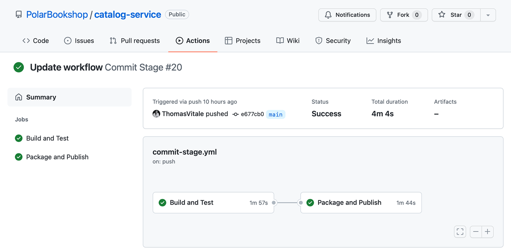

16.1 使用 Spring Native 和 GraalVM 构建原生镜像
Java 应用之所以广受欢迎，一个重要的原因就是其通用的平台（即 Java 运行时环境 JRE），它让开发人员可以"一次编写，到处运行"，无需考虑操作系统。这源于应用的编译方式。Java 编译器并不是把应用代码直接编译为操作系统所能理解的机器码，而是产生字节码，由专门的组件（JVM，即 Java 虚拟机）运行。在执行过程中，JRE 会把字节码动态解释转换为机器码，从而使同一个应用可执行文件能运行在任意安装了 JVM 的机器和操作系统上。这被称为即时编译（Just-In-Time，JIT）。
运行在 JVM 上的应用存在启动开销和占用开销的问题。传统应用的启动阶段曾经相当漫长，有时甚至需要数分钟。标准云原生应用的启动要快得多（通常几秒而不是几分钟），这对大多数场景来说已经足够，但对需要近乎瞬时启动的 Serverless 工作负载而言，这可能成为一个严重问题。
标准的 Java 应用也会比 Go 等其他技术栈消耗更多的内存和 CPU。云服务通常按使用量计费，因此减少 CPU 和内存占用就意味着降低成本。本节将介绍如何使用 GraalVM 和 Spring Native 来解决这一问题。
16.1.1 理解 GraalVM 和原生镜像
到目前为止，使用的是 OpenJDK 提供的 JVM 和工具（有多个发行版本，例如 Eclipse Adoptium（原 AdoptOpenJDK）、BellSoft Liberica JDK 和 Microsoft OpenJDK）。GraalVM 是 Oracle 推出的基于 OpenJDK 的新发行版，"旨在加速使用 Java 和其他 JVM 语言编写的应用的执行"（www.graalvm.org）。
把 Java 应用的运行时从标准 OpenJDK 发行版换成 GraalVM，可以提升应用的性能和效率，这要归功于一套执行 JIT 编译的新优化技术（GraalVM 编译器）。GraalVM 还能执行用其他语言（如 JavaScript、Python 和 R）编写的代码，甚至可以编写多语言应用，比如在 Java 代码中嵌入 Python 脚本。
GraalVM 提供两种主要运行模式。JVM 运行时模式可以像使用其他任何 OpenJDK 发行版一样运行 Java 应用，同时借助 GraalVM 编译器提升性能与效率。而让 GraalVM 在 Serverless 场景中颇具创新性和受欢迎程度的，则是原生镜像（Native Image）模式。GraalVM 不是把 Java 代码编译成字节码、再靠 JVM 在运行时解释并转换为机器码，而是提供了一套新技术（原生镜像构建器），把 Java 应用直接编译为机器码，产出一个包含自身运行所需的全部机器码的原生可执行文件（native executable）或原生镜像。
与 JVM 方案相比，编译为原生镜像的 Java 应用拥有更快的启动速度、更优的内存占用和瞬时的性能峰值。GraalVM 之所以能做到这些，是因为改变了应用的编译方式。原生镜像模式并非在运行时由 JIT 编译器优化并生成机器码，而是基于提前编译（Ahead-Of-Time，AOT）。从 main() 方法出发，构建时会静态分析应用执行过程中可达的所有类和方法，并编译为一个独立自包含的二进制可执行文件，其中包含全部依赖和库。这种可执行文件并非运行在 JVM 之上，而是像 C 或 C++ 应用一样直接运行在机器上（内存占用更小、启动更快）。
使用原生镜像时，过去由 JVM 在运行时完成的许多工作现在都在构建时完成。为此，把应用构建为原生可执行文件比采用 JVM 方案耗时更长、也消耗更多计算资源。此外，GraalVM 的 AOT 编译器默认并不支持全部 Java 特性，例如反射、动态代理、序列化和动态类加载都需要额外配置，以帮助 AOT 编译器理解如何对其静态分析。
那么，我们该如何改造已有的 Java 应用，使其以原生镜像的方式运行？需要为框架和库提供多少配置？又如何为 AOT 编译器提供必需的配置？这正是 Spring Native 登场的地方。
16.1.2 借助 Spring Native 为 Spring Boot 引入 GraalVM 支持
Spring Native 是 Spring 组合中一个较新的项目，用于支持用 GraalVM 编译 Spring Boot 应用。Spring Native 的主要目标是：无需任何代码改动，就能把任意 Spring 应用编译为 GraalVM 原生可执行文件。为了实现这一目标，项目提供了一套 AOT 基础设施（从专门的 Gradle/Maven 插件中调用），为 GraalVM 贡献编译 Spring 类所需的全部配置。它是 Spring 产品组合的最新成员之一，目前正处于 Beta 阶段。在撰写本书时，大多数 Spring 库以及 Hibernate、Lombok、gRPC 等常见库均已受支持。
对于尚未支持的 Spring 库，以及我们自己的代码，Spring Native 提供了有用的工具来配置 GraalVM 编译器。例如，假如在代码中使用了反射（reflection）或动态代理（dynamic proxies），GraalVM 就需要专门的配置才能完成 AOT 编译。Spring Native 提供了诸如 @NativeHints 和 @TypedHint 注解，可以直接在 Java 代码里指导 GraalVM 编译器，并利用 IDE 的自动补全和类型检查能力。
注意：Spring Native 将在 Spring Framework 6 和 Spring Boot 3 （预计 2022 年 12 月发布）中脱离 Beta 阶段，成为 Spring 核心库的一部分。
本节将以上一节的 Quote Service 应用为例，通过构建一个暴露 API 从书籍中获取语录的 Web 应用，来探索 Spring Native 的特性。
使用 Spring Native 和 Spring Reactive Web 引导新项目
你可以通过 Spring Initializr（https://start.spring.io）初始化 Quote Service 项目，把结果存储到新的 quote-service Git 仓库中，并推送到 GitHub。初始化参数如图 16.1 所示。
项目包含以下主要依赖：
- Spring Reactive Web — 提供构建响应式 Web 应用所需的库（基于 Spring WebFlux），并包含默认内嵌服务器 Netty。
- Spring Native — 支持使用 GraalVM 的 native-image 编译器把 Spring 应用编译为原生可执行文件。

图 16.1 初始化 Quote Service 项目的参数最终 build.gradle 文件的 dependencies 部分如下：
dependencies {
implementation 'org.springframework.boot:spring-boot-starter-webflux'
testImplementation 'org.springframework.boot:spring-boot-starter-test'
testImplementation 'io.projectreactor:reactor-test'
}
此时你可能会问：Spring Native 的依赖在哪里？并没有。那 Spring Native 去哪了？答案在 build.gradle 文件的 plugins 部分：
plugins {
id 'org.springframework.boot' version '2.7.3'
id 'io.spring.dependency-management' version '1.0.13.RELEASE'
id 'java'
id 'org.springframework.experimental.aot' version '0.12.1'
}
当你把 Spring Native 添加到项目时，会获得 Spring AOT 插件。它负责提供 GraalVM 编译 Spring 类所需的配置，并为从 Gradle（或 Maven）构建原生可执行文件提供便捷功能。
如果你从 Spring Initializr 引导新项目，还会在 HELP.md 文件中获得使用 Spring Native 的额外说明。如果你选择了支持的依赖，会看到一条警告消息。例如，Spring Cloud Stream 在撰写时尚未完全支持。假如你用 Spring Native 和 Spring Cloud Stream 初始化项目，HELP.md 会展示类似下面的消息：
The following dependency is not known to work with Spring Native: 'Cloud Stream'. As a result, your application may not work as expected.
注意：你可以在 Spring Native 官方文档中查看哪些 Spring 库受支持（https://docs.spring.io/spring-native/docs/current/reference/htmlsingle）。
接下来，让我们实现 Quote Service 的业务逻辑。
实现业务逻辑
Quote Service 将通过 REST API 返回随机的书籍语录。首先，创建 com.polarbookshop.quoteservice.domain 包，并定义一个 Quote record 来建模领域实体：
public record Quote (
String content,
String author,
Genre genre
){}
清单 16.1 定义用于表示书籍语录的领域实体
语录按照其所出自书籍的体裁（Genre）进行分类。添加一个 Genre 枚举来建模这一分类。
public enum Genre {
ADVENTURE,
FANTASY,
SCIENCE_FICTION
}
清单 16.2 定义用于表示书籍体裁的枚举
最后，在新的 QuoteService 类中实现获取书籍语录的业务逻辑。语录将定义并保存在一个静态的内存列表中。
package com.polarbookshop.quoteservice.domain;
@Service
public class QuoteService {
private static final Random random = new Random();
private static final List<Quote> quotes = List.of(
new Quote("Content A", "Abigail", Genre.ADVENTURE),
new Quote("Content B", "Beatrix", Genre.ADVENTURE),
new Quote("Content C", "Casper", Genre.FANTASY),
new Quote("Content D", "Dobby", Genre.FANTASY),
new Quote("Content E", "Eileen", Genre.SCIENCE_FICTION),
new Quote("Content F", "Flora", Genre.SCIENCE_FICTION)
);
public Flux<Quote> getAllQuotes() {
return Flux.fromIterable(quotes);
}
public Mono<Quote> getRandomQuote() {
return Mono.just(quotes.get(random.nextInt(quotes.size() - 1)));
}
public Mono<Quote> getRandomQuoteByGenre(Genre genre) {
var quotesForGenre = quotes.stream()
.filter(q -> q.genre().equals(genre))
.toList();
return Mono.just(quotesForGenre.get(
random.nextInt(quotesForGenre.size() - 1)));
}
}
清单 16.3 查询书籍语录的业务逻辑（注释：将语录列表保存在内存中；返回所有语录作为响应式数据流）
注意：由于本例的焦点是 GraalVM 与 Spring Native 的原生编译，我们保持简单，跳过持久化层。你可以自行扩展，例如添加 Spring Data R2DBC 和 Spring Security（二者均受 Spring Native 支持）。
业务逻辑到此完成。接下来，我们把它暴露为 HTTP API。
实现 Web 控制器
创建 com.polarbookshop.quoteservice.web 包，并添加一个 QuoteController 类来暴露三个端点：
- 返回所有语录
- 返回一条随机语录
- 返回指定体裁的一条随机语录
package com.polarbookshop.quoteservice.web;
@RestController
public class QuoteController {
private final QuoteService quoteService;
public QuoteController(QuoteService quoteService) {
this.quoteService = quoteService;
}
@GetMapping("/quotes")
public Flux<Quote> getAllQuotes() {
return quoteService.getAllQuotes();
}
@GetMapping("/quotes/random")
public Mono<Quote> getRandomQuote() {
return quoteService.getRandomQuote();
}
@GetMapping("/quotes/random/{genre}")
public Mono<Quote> getRandomQuote(@PathVariable Genre genre) {
return quoteService.getRandomQuoteByGenre(genre);
}
}
清单 16.4 定义 HTTP 端点的处理器
然后配置内嵌 Netty 服务器监听端口 9101，并声明应用名。打开 application.yml 文件，添加如下配置：
server:
port: 9101
spring:
application:
name: quote-service
清单 16.5 配置 Netty 服务器端口与应用名
最后，用你在第 8 章学到的同样技巧编写一些集成测试。
编写集成测试
从 Spring Initializr 引导项目时，得到了自动生成的 QuoteServiceApplicationTests 类。我们更新一下，添加一些检查 Quote Service 暴露的 REST API 的集成测试。
@SpringBootTest(webEnvironment = SpringBootTest.WebEnvironment.RANDOM_PORT)
class QuoteServiceApplicationTests {
@Autowired
WebTestClient webTestClient;
@Test
void whenAllQuotesThenReturn() {
webTestClient.get().uri("/quotes")
.exchange()
.expectStatus().is2xxSuccessful()
.expectBodyList(Quote.class);
}
@Test
void whenRandomQuoteThenReturn() {
webTestClient.get().uri("/quotes/random")
.exchange()
.expectStatus().is2xxSuccessful()
.expectBody(Quote.class);
}
@Test
void whenRandomQuoteByGenreThenReturn() {
webTestClient.get().uri("/quotes/random/FANTASY")
.exchange()
.expectStatus().is2xxSuccessful()
.expectBody(Quote.class)
.value(quote -> assertThat(quote.genre()).isEqualTo(Genre.FANTASY));
}
}
清单 16.6 Quote Service 的集成测试
实现就到这里了。下面在 JVM 上执行自动测试并运行应用。
在 JVM 上运行和测试
到目前为止，Quote Service 是一个标准的 Spring Boot 应用，与之前章节构建的其他应用并无不同。例如，可以使用 Gradle 运行自动测试，确保其行为正确。打开终端，导航到项目根目录，执行下列命令：
$ ./gradlew test
也可以把它作为 JAR 包在 JVM 上运行或打包成 JAR 产物。在同一终端执行以下命令启动应用：
$ ./gradlew bootRun
请调用 Quote Service 暴露的端点，验证应用是否正确工作：
$ http :9101/quotes
$ http :9101/quotes/random
$ http :9101/quotes/random/FANTASY
测试完成后，用 Ctrl-C 停止进程。
如何把它编译为原生可执行文件，并利用瞬时启动时间、瞬时峰值性能和降低的内存占用呢？这就是下一节的主题。
16.1.3 把 Spring Boot 应用编译为原生镜像
把 Spring Boot 应用编译为原生可执行文件有两种方式。第一种显式使用 GraalVM，生成可在机器上直接运行的、针对特定操作系统的可执行文件。第二种依赖 Cloud Native Buildpacks，把原生可执行文件容器化，并运行在 Docker 等容器运行时上。这两种我们都会用到。
用 GraalVM 编译原生可执行文件
第一种方式要求机器上装有 GraalVM 运行时。可以直接从官网（www.graalvm.org）安装，或者使用 sdkman 之类的工具。sdkman 的安装说明见附录 A 的 A.1 节。
对于本章示例，我将使用撰写时最新的 GraalVM 22.1 发行版（基于 OpenJDK 17）。使用 sdkman 安装 GraalVM，可以这样做：
$ sdk install java 22.2.r17-grl
到了安装结束，过程中 sdkman 会询问是否将该发行版设为默认。我建议不要，因为我们会显式指定使用 GraalVM 而非标准 OpenJDK，仅在需要的时候才切换。
然后打开终端，导航到 Quote Service 项目中，配置 shell 使用 GraalVM，安装 GraalVM 的 native-image 组件：
$ sdk use java 22.2.r17-grl
$ gu install native-image
初始化 Quote Service 项目时，GraalVM 官方 Gradle/Maven 插件已被自动包含。它提供了使用 GraalVM 原生镜像模式编译应用的功能。
注意：以下 Gradle 任务需要 GraalVM 作为当前 Java 运行时。使用 sdkman 时，需要先在当前终端运行
sdk use java 22.2.r17-grl来切换。
要注意 GraalVM 应用的编译步骤耗时更长，根据机器计算资源不同可能需要几分钟。这是使用原生镜像的一个缺点。同时，由于 Spring Native 仍处于实验阶段，可能会看到一些调试日志和警告，只要编译成功就不用担心。
在切换 GraalVM 为当前 Java 运行时的同一终端中，执行以下命令将应用编译为原生镜像：
$ ./gradlew nativeCompile
命令产生的产物是一个独立的二进制文件。由于是原生可执行文件，在 macOS、Linux 和 Windows 上会不同。你可以在本地直接执行它，而无需 JVM。对 Gradle 来说，原生可执行文件生成在 build/native/nativeCompile 目录中。运行它：
$ build/native/nativeCompile/quote-service
首先注意到的是启动时间：使用 Spring Native 时通常不到 100 毫秒。这相比需要几秒的 JVM 方案是令人印象深刻的改进。这还没有写任何代码，就实现了这一点！我们发送一个请求，确认应用运行正常：
$ http :9101/quotes/random
测试完成后，用 Ctrl-C 停止应用。
你也可以把自动测试编译成原生可执行文件，因为它们会使用与生产环境相同的运行时，可靠性更高。不过编译步骤比在 JVM 上运行要长：
$ ./gradlew nativeTest
最后，你还可以直接从 Gradle/Maven 以原生镜像方式运行 Spring Boot 应用：
$ ./gradlew nativeRun
进入下一节之前先 Ctrl-C 停止应用。下一节展示将 Spring Boot 应用编译为原生可执行文件的另一种方式：它不需要在机器上安装 GraalVM，并使用 Cloud Native Buildpacks 生成容器化的原生可执行文件。
用 Buildpacks 容器化原生镜像
第二种把 Spring Boot 应用编译为原生可执行文件的方式靠 Cloud Native Buildpacks。就像第 6 章用 Buildpacks 把 Spring Boot 应用打包成容器镜像一样，这次我们用它为应用的 GraalVM 原生可执行文件构建容器镜像。这种方法的好处是不需要在机器上安装 GraalVM。
当你从 Spring Initializr 引导 Quote Service 项目时，得到的不只是 Spring AOT 插件，还有 Spring Boot 中 Buildpacks 集成的额外配置。如果你再看一次 build.gradle 文件，可以看到 bootBuildImage 任务配置为通过 BP_NATIVE_IMAGE 环境变量生成容器化的原生镜像。我们顺便为它配置镜像名和容器仓库认证，和之前构建的其他 Polar Bookshop 应用保持一致。
清单 16.7 容器化 Quote Service 的配置（使用 Paketo Buildpacks 的 "tiny" 版，最小化容器镜像大小；启用 GraalVM 支持，生成容器化的原生镜像；配置镜像名和容器仓库认证）
tasks.named('bootBuildImage') {
builder = 'paketobuildpacks/builder:tiny'
environment = ['BP_NATIVE_IMAGE': 'true']
imageName = "${project.name}"
docker {
publishRegistry {
username = project.findProperty("registryUsername")
password = project.findProperty("registryToken")
url = project.findProperty("registryUrl")
}
}
}
注意：在你机器上运行原生镜像编译时可能会注意到，这比平时更耗时、也消耗更多计算资源。使用 Buildpacks 时，请确保计算机至少有 16 GB 内存。如果使用 Docker Desktop，请给 Docker 虚拟机配置至少 8 GB 内存。在 Windows 上，建议在 WSL2 而非 Hyper-V 上使用 Docker Desktop。更多配置建议见 Spring Native 文档（https://docs.spring.io/spring-native/docs/current/reference/htmlsingle）。
使用 Buildpacks 生成容器化原生镜像的命令，与我们为 JVM 镜像使用的命令相同。打开终端，导航到 Quote Service 项目（quote-service），运行以下命令：
$ ./gradlew bootBuildImage
完成后，试着运行生成的容器镜像：
$ docker run --rm -p 9101:9101 quote-service
启动时间同样应该不到 100 毫秒。发几个请求测试应用是否正常工作：
$ http :9101/quotes/random
测试完成后，用 Ctrl-C 停止容器进程。